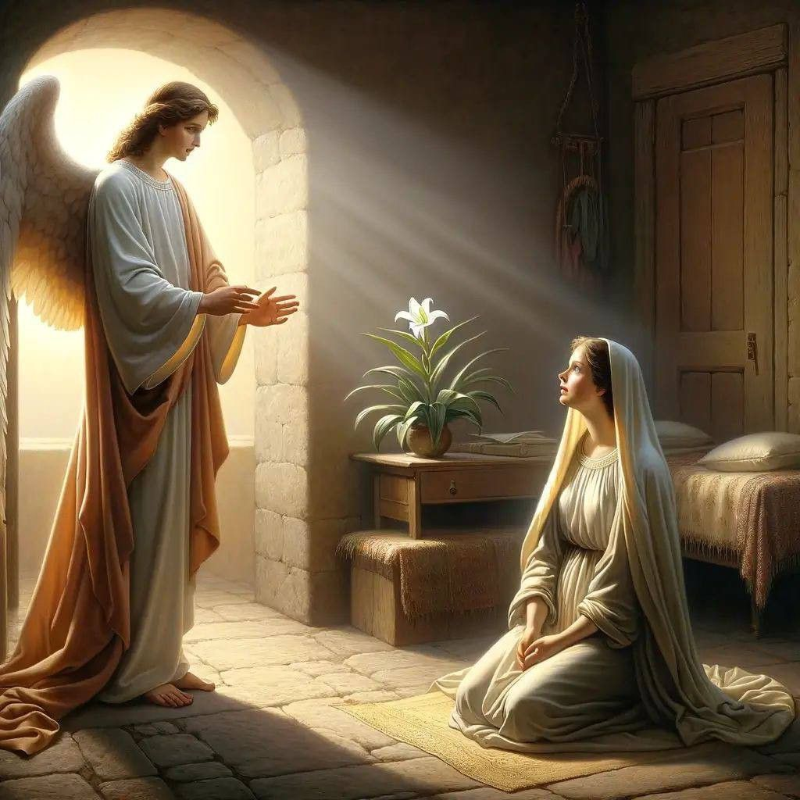
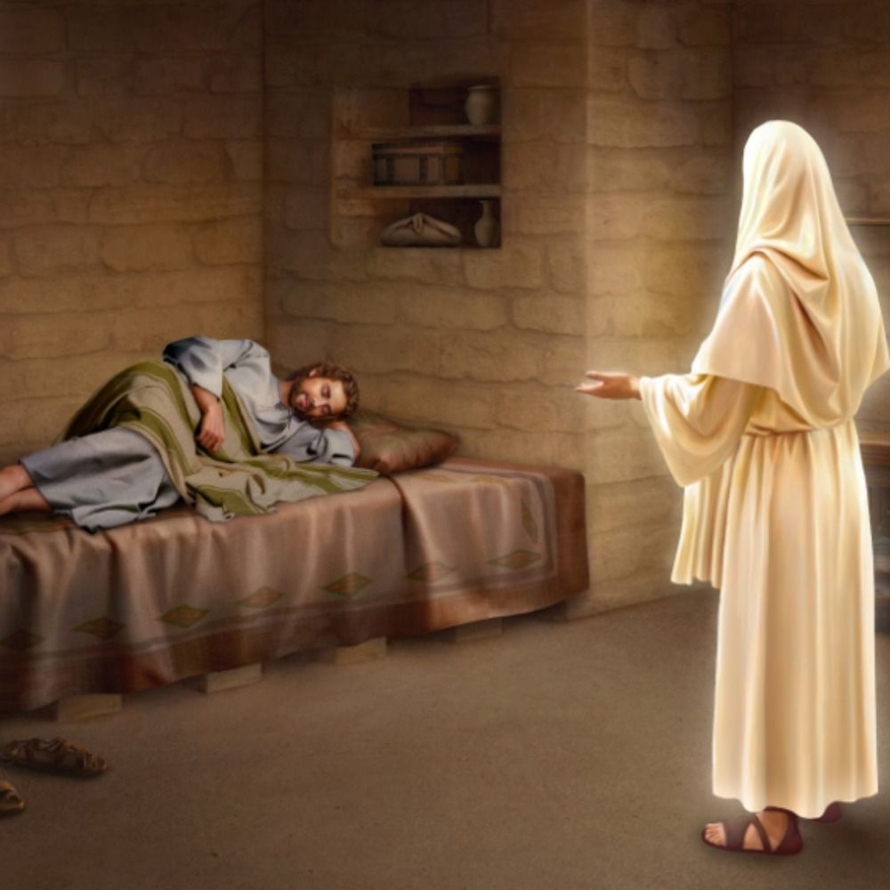
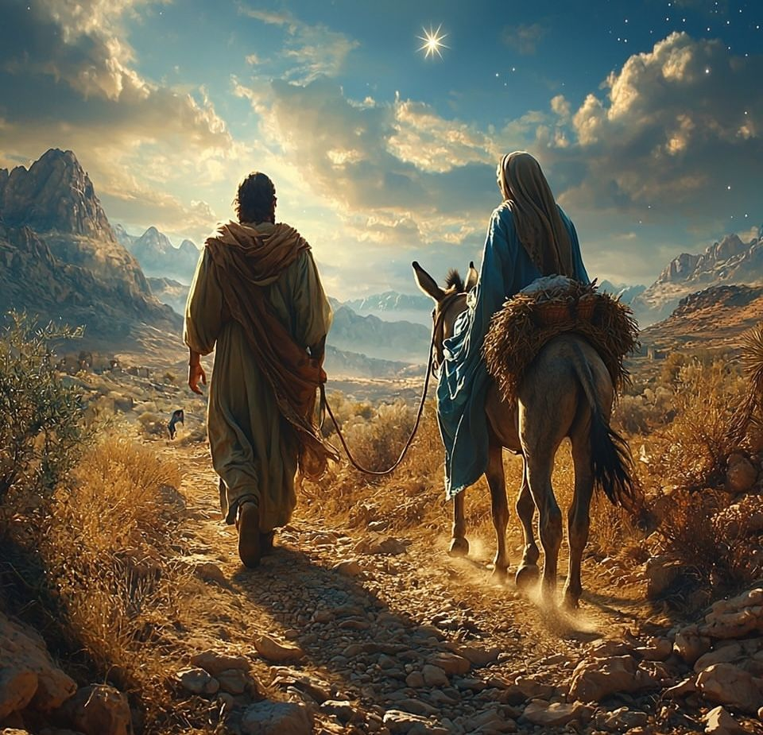

The Journey to Bethlehem
God’s plans are always greater than ours. Even in the simplest places, He can reveal His greatest miracles. Just as Mary and Joseph trusted God through uncertainty, we too can find peace and strength when we follow His will. The birth of Jesus reminds us that humility, obedience, and faith lead to eternal joy.”
The Miraculous Birth of Jesus

The Angel Visits Mary
மரியாளுக்கு தேவதூதன் வந்தது
One day, in a small town called Nazareth, there lived a kind and faithful young woman named Mary. She was engaged to a man named Joseph. Suddenly, the angel Gabriel appeared before her from heaven. Mary was startled, but the angel smiled and said: “Do not be afraid, Mary! You have found favor with God. You will give birth to a son, and you shall call his name Jesus. He will be great and will be called the Son of God. His kingdom will never end.” Mary asked in wonder, “How can this be? I am not yet married.” The angel replied, “The Holy Spirit will come upon you, and the power of the Most High will overshadow you. Therefore, the child to be born will be called the Son of God.” Mary humbly answered, “I am the Lord’s servant. May everything happen just as you have said.” Then the angel returned to heaven.
ஒரு நாள், நாசரேத் என்ற சிறிய ஊரில், மரியாள் என்ற நல்ல மனம் கொண்ட, தெய்வபக்தி மிக்க இளம் பெண் இருந்தாள். அவள் யோசேப்புடன் நிச்சயிக்கப்பட்டிருந்தாள் அந்த நாளில், திடீரென கபிரியேல் தேவதூதன் வானத்திலிருந்து வந்து அவள் முன் தோன்றினான். மரியாள் அதிர்ச்சியடைந்தாள்; ஆனால் தேவதூதன் சிரித்தபடி கூறினான்: “மரியாளே, பயப்படாதே! நீ தேவனுடைய அருளைப் பெற்றுள்ளாய். நீ ஒரு மகனைப் பெறுவாய்; அவர் பெயர் இயேசு என்பதாக இருக்கும். அவர் அதிகமானவர், தேவனுடைய குமாரர். அவர் என்றென்றும் ஆட்சி செய்வார்.” மரியாள் ஆச்சரியத்துடன் கேட்டாள்: “எப்படி இது நடக்கும்? நான் இன்னும் திருமணம் ஆகவில்லை!” தேவதூதன் சொன்னான்: “இது தேவனுடைய ஆவியால் உண்டாகும். பரிசுத்த ஆவி உன் மீது வருவான். அதனால் பிறக்கப்போகும் குழந்தை தேவனுடைய குமாரர் என அழைக்கப்படுவான்.” மரியாள் பணிவுடன் கூறினாள்: “கர்த்தரின் தாசியான எனக்குத் தம் சொல்லுப்படி ஆகட்டும்.” அந்தச் சொல் முடிந்ததும் தேவதூதன் வானத்திற்குப் போனான்.

Joseph’s Dream
யோசேப்பின் கனவு
When Joseph learned that Mary was expecting a child, he was troubled. He was a good man and did not want to disgrace her publicly, so he decided to quietly end the engagement. But that night, an angel of the Lord appeared to him in a dream and said: “Joseph, son of David, do not be afraid to take Mary as your wife. The child she carries is from the Holy Spirit. She will give birth to a son, and you shall name him Jesus, for He will save His people from their sins.” When Joseph woke up, he obeyed God’s command and took Mary as his wife.
மரியாள் கர்ப்பமாக இருப்பதை அறிந்தபோது, யோசேப்புக்கு குழப்பம் ஏற்பட்டது. அவர் நல்ல மனிதர்; மரியாளை அவமானப்படுத்த விரும்பவில்லை. அதனால் அமைதியாக அவளிடம் இருந்து விலக நினைத்தார். அந்த இரவில், யோசேப்புக்கு தேவனின் தூதன் கனவில் தோன்றி சொன்னான்: “யோசேப்பே, தாவீதின் சந்ததியாவாய்! மரியாளை மனைவியாக ஏற்க பயப்படாதே. அவளின் கர்ப்பம் பரிசுத்த ஆவியால் உண்டானது. அவள் ஒரு மகனைப் பெறுவாள்; நீர் அவனுக்கு இயேசு என்று பெயர் வையுங்கள், ஏனெனில் அவர் தம் மக்களை பாவத்திலிருந்து மீட்பார்.” யோசேப்பு விழித்தபின் தேவனுடைய கட்டளைக்கு கீழ்ப்படியினார். அவர் மரியாளை மனைவியாக ஏற்றுக்கொண்டார்.

The Journey to Bethlehem
பெத்லகேம் பயணம்
In those days, themark Roman Emperor Caesar Augustus issued a decree that everyone must return to their hometown to be counted in a census. So Joseph and Mary traveled from Nazareth to Bethlehem, a long and difficult journey. When they arrived, the town was crowded with people. Every inn was full, and there was no place for them to stay. A kind man saw their need and said, “You may rest in my stable.” And so, that night, in a humble stable among the animals, the Savior of the world was soon to be born.
அந்த நாட்களில், ரோம அரசன் சீசர் ஆகஸ்து, அனைவரும் தங்கள் சொந்த ஊருக்குச் சென்று கணக்கெடுக்கப்பட வேண்டும் என்று உத்தரவிட்டார். அதனால் யோசேப்பும் மரியாளும் நாசரேத்திலிருந்து பெத்லகேம் என்ற தூர நகரத்திற்குப் பயணம் செய்தனர். அவர்கள் பல நாட்கள் கழித்து அங்கு வந்தனர். ஆனால் பெத்லகேம் மக்கள் நிறைந்திருந்தனர். அவர்களுக்கு தங்க இடம் எதுவும் கிடைக்கவில்லை — அனைத்து விடுதிகளும் நிறைந்திருந்தன. ஒரு நல்ல மனம் கொண்ட மனிதர் சொன்னான்: “எனது மாடுப்பண்ணையில் ஓய்வெடுக்கலாம்.” அங்கேதான் அவர்கள் தங்கினர்.
“That night, in the quiet town of Bethlehem, Mary gave birth to her firstborn son — Jesus. She wrapped Him in simple cloths and placed Him in a manger, because there was no room for them in the inn.Jesus’ birth reminds us that God’s greatest gift often comes in humble places. He came not as a mighty king, but as a gentle Savior — born among the poor, to bring hope to all. No matter how small or ordinary we may feel, God can use us to share His light with the world.”